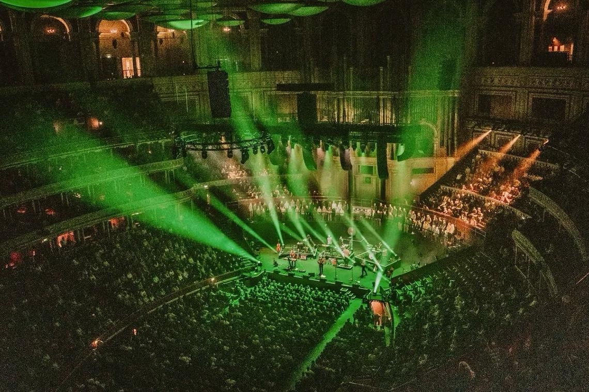
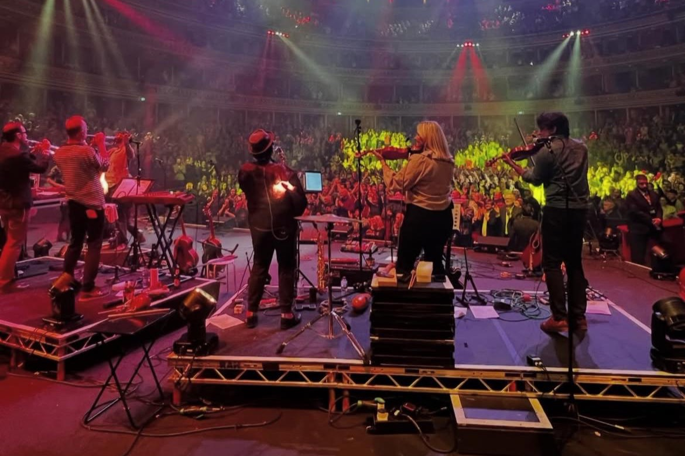
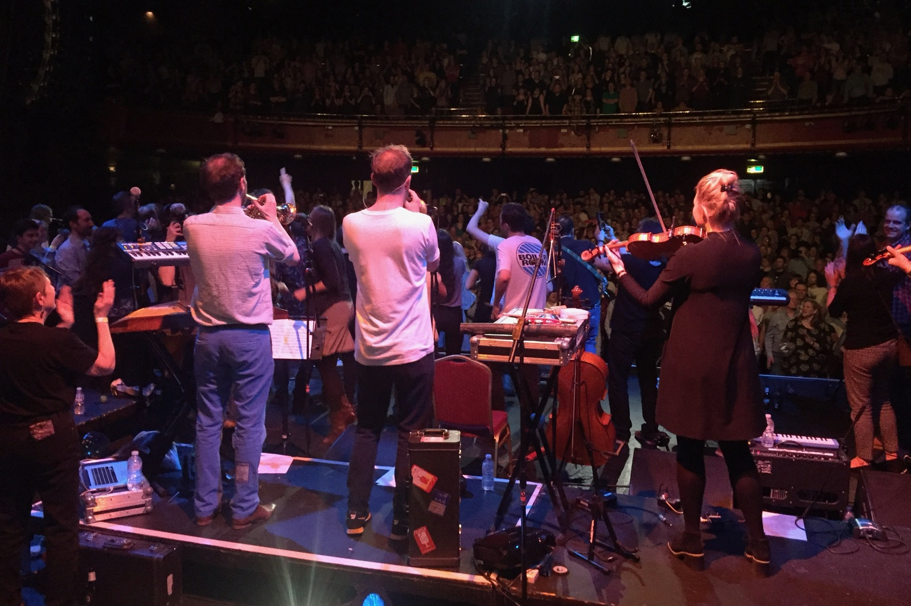
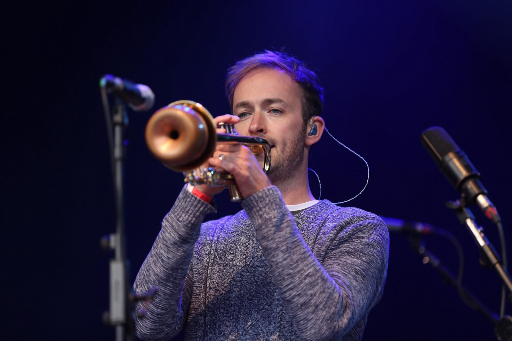
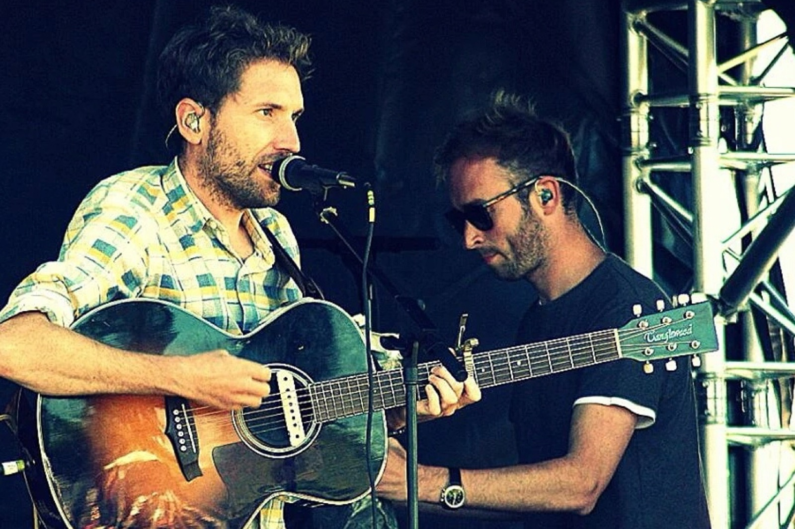
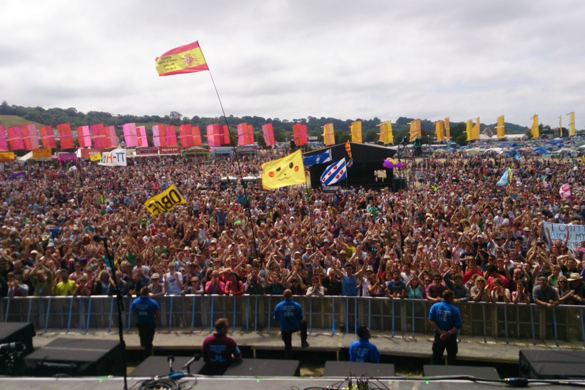
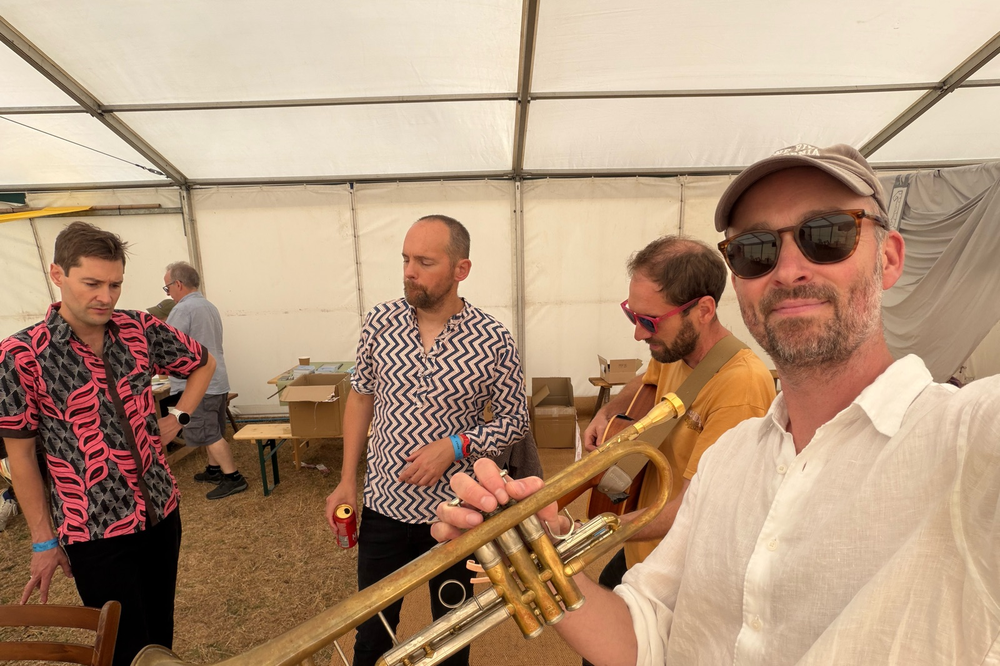

Thomas Hodgson
Ethnomusicologist, UCLA
Stornoway
I play trumpet and various other instruments in Stornoway, an indie folk band from Oxford with three UK top-20 albums. Being in the band means the industry I study is also one I work in.
In July 2025, when our Eurostar broke down outside Guînes in northern France, we got our instruments out and played for the passengers beside the tracks. In March 2026 we played the Royal Albert Hall.







With Edward Nesbit
Since 2020 I have been working with the composer Edward Nesbit on a series of pieces, most of them written in response to something happening in the world.
The first, Aenigmata, is a cycle of ten songs made during the pandemic, set to the Latin riddles of the seventh-century poet St Aldhelm, whose own collection gives the cycle its name. Listen on SoundCloud.
The second was a set of new arrangements of Stornoway songs. Excelsior on Spotify.
The third is underway: ten songs for voice and classical guitar responding to the Los Angeles fires, setting established poetry alongside new poems written by residents of Altadena.
The Yarns
My first band was The Yarns, which I played in while I was a student at Oxford. The Yarns on Spotify.